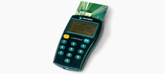

Hoe veilig is internetbankieren?
Beveiliging banken
De toegang tot de eigen bankzaken via het internet verschilt per bank. We kijken in dit stuk naar de beveiliging van drie banken in Nederland: ABN Amro, ING en de Rabobank.
ABN Amro

De ABN AMRO gebruikt de e.dentifier-kaartlezer om veilig aan te melden. Bij het inloggen op de website van de bank dient de gebruiker zijn bankpas in de e.dentifier te steken en zijn pincode in te geven. Vervolgens typt de gebruiker een op het computerscherm weergegeven achtcijferige responscode in op de e.dentifier. De e.dentifier geeft daarop een code terug, die de gebruiker op de website moet ingeven om toegang te krijgen tot internetbankieren. Bij het fiatteren van een betaalopdracht moet het proces herhaald worden. De e.dentifier heeft een interne klok, en gebruikt gegevens van de bankpas zoals het bankrekeningnummer en het pasnummer en eventueel een door de website gegenereerde code om een unieke code te genereren. Hiermee kan de website controleren dat de gebruiker de bankpas in zijn bezit heeft, en de pincode weet. Met de E.dentifier2 kan de gebruiker met een USB-kabel de e.dentifier aan zijn computer koppelen, en hoeft dan alleen zijn pas en pincode in te geven. Zonder USB-kabel of Windows drivers kan de e.dentifer nog wel op de 'oude' manier worden gebruikt, door het ingeven van codes die door de website zijn gegenereerd.
ING

Bij ING moet de klant ter bevestiging van een opdracht een TAN-code invoeren, die ING op hetzelfde moment via een gratis sms verstuurt of die op een lijst met TAN-codes te vinden is. In januari 2018 heeft ING aangegeven de TAN-code, zowel via de papieren lijst als sms, gefaseerd door mobiel bevestigen te gaan vervangen. In plaats van het overtypen van de beveiligingscode van een papieren lijst of sms’je, kunnen klanten hun opdrachten in de Mobiel Bankieren App van ING alleen nog bevestigen met hun mobiele pin of vingerafdruk.
Rabobank
De Rabobank gebruikt een Rabo Scanner. De Rabo Scanner is ontwikkeld door de Rabobank en geproduceerd door Vasco en heeft afmetingen van 100×60×15 mm, een kleurendisplay, een camera, een capacitief toetsenbord en wordt gevoed door drie AAA batterijen. Het apparaat bevat een ingebouwde camera en een numeriek toetsenbord. De pinpas kan er van bovenaf worden ingeschoven. Bij het inloggen of overboeken via het Internet verschijnt een kleurcode, een vierkante afbeelding met rode, groene en blauwe stippen op het computerscherm. Na het insteken van de pinpas en invoeren van de pincode moet de klant deze kleurcode met de camera scannen. Daarna geeft de Rabo Scanner een inlog- of signeercode die de klant op het computerscherm moet intoetsen. De visuele weergave in het display kent meerdere varianten afhankelijk van het gebruik. Bij een enkele betaalactie wordt het rekeningnummer van de ontvanger en het bedrag weergegeven. In sommige gevallen wordt hierbij een naam van de ontvanger weergegeven in plaats van een rekeningnumer. Bij meerdere betaalacties wordt het aantal acties en het totaalbedrag weergegeven.